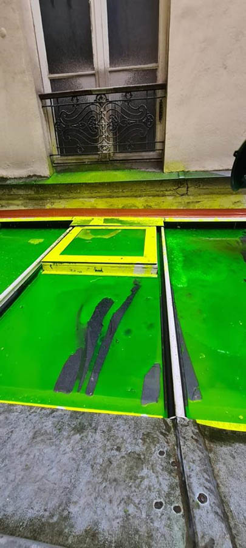
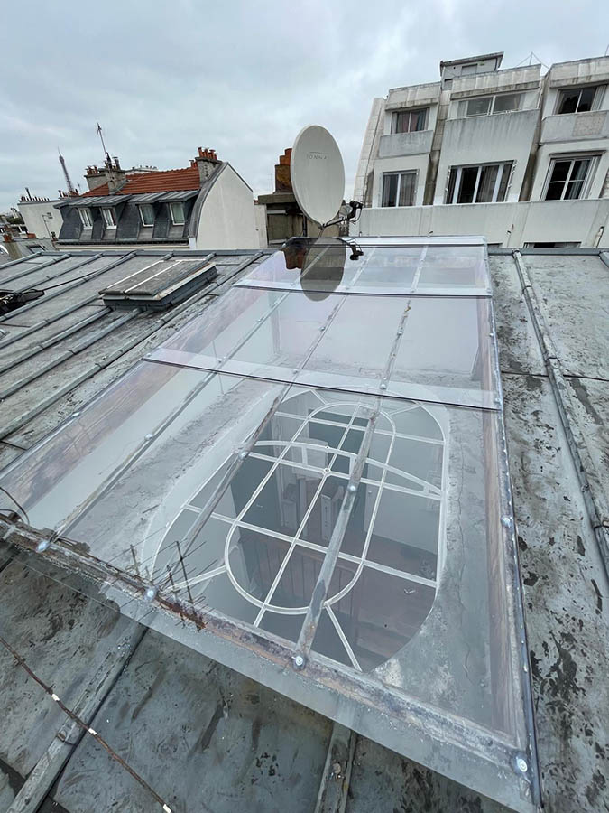
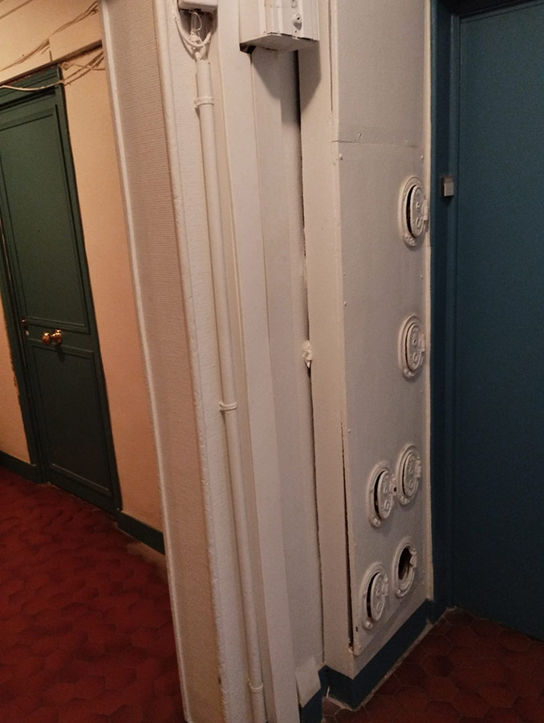

Recherche de fuite et remise en état
Travaux en copropriété à Paris pour les syndics et les gestionnaires
Vous gérez un immeuble dans lequel une fuite ou des dommages ont été signalés. A.T.C. BAT intervient pour rechercher la cause, réparer et remettre en état les zones concernées.
Zone d’intervention : tout Paris et la petite couronne (Hauts-de-Seine, Seine-Saint-Denis, Val-de-Marne), notamment Ivry-sur-Seine, Vitry-sur-Seine, Villejuif, Alfortville, Charenton-le-Pont, Maisons-Alfort et Le Kremlin-Bicêtre. Précisez la commune ou l’arrondissement de l’immeuble.
Les informations à transmettre
Réponse immédiate sur WhatsApp
Extrêmement réactifs : vous êtes pris en charge dès réception de votre message.
Devis sous 24 h
Votre devis vous est envoyé dès que nous avons les informations nécessaires à l’intervention.
Un interlocuteur qui coordonne
Nous organisons la recherche, la réparation et la remise en état.
Paris et première couronne
Hauts-de-Seine (92), Seine-Saint-Denis (93) et Val-de-Marne (94).
Un interlocuteur pour organiser les travaux
A.T.C. BAT est une entreprise tous corps d’état. Elle réalise des interventions dans les parties communes et chez les copropriétaires, notamment en plomberie, étanchéité et second œuvre.
Dites-nous quel bâtiment est touché, ce que vous avez constaté et qui joindre sur place : nous définissons les travaux à partir de là.
Nos interventions en copropriété
-

Recherche de fuite
Canalisations enterrées, toitures et verrières : nous recherchons l’origine de la fuite pour préparer la réparation.
Voir la recherche de fuite -

Colonnes en fonte
Fonte, réseaux d’évacuation et plomberie : nous réparons ou remplaçons l’ouvrage en cause.
Voir les colonnes d’immeuble -

Toitures et verrières
Recherche de fuite, réparation de toiture, rénovation de terrasse et remplacement de verrière.
Voir les toitures et verrières -

Halls et cages d’escalier
Rénovation de halls d’immeuble et réfection de cages d’escalier.
Voir les rénovations -

Électricité des parties communes
Remise à niveau de l’installation électrique et remise en état du réseau électrique, téléphone et câble.
Voir l’électricité -

Logements après un dégât des eaux
Sols, murs, peinture, électricité : nous réalisons les travaux de remise en état jusqu’aux finitions.
Voir la remise en état
ATC BAT a réalisé la rénovation du portillon de notre copropriété. Le travail est bien fait et sérieux. En amont, le responsable nous a proposé et expliqué différents scénarios pour nous permettre de faire notre choix. Il y a eu un petit problème de finition au niveau de la peinture mais l équipe s est montrée très disponible pour y remédier. Nous recommandons ATC BAT.
Des moyens d’investigation pour la copropriété
Pour une recherche de fuite, A.T.C. BAT dispose d’une caméra d’inspection des canalisations et d’une caméra thermique. L’humidimètre pour les murs et les plafonds, les détecteurs de fuite et les appareils de mesure de l’humidité de l’air complètent cet équipement. Les moyens retenus dépendent de la situation dans l’immeuble.
Selon la situation et le besoin, nous utilisons aussi la fluorescéine, la mise en pression, le gaz traceur, le fumigène ou l’écoute acoustique.


Je m’appelle Joseph, je gère une société de bâtiment. Régulièrement j’ai des problématiques insolubles de fuite et de recherche de fuite dans des bâtiments. La société ATC BAT m’a permis la dernière fois de trouver une fuite d’une canalisation intégrée entre deux étages dans le sol à un endroit tellement improbable que personne n’avait trouvé jusqu’à présent.
Donc ce n’est pas la première fuite qu’ils nous trouvent, ils font vraiment très bien le job, ce ne sont pas les moins chers. Par contre quand vous avez un problème à résoudre ils vous trouvent la solution.
Plomberie de l’immeuble
Vous cherchez un plombier pour un immeuble en copropriété ? A.T.C. BAT intervient sur les colonnes d’eau et d’évacuation, dans les parties communes comme chez les copropriétaires.
Fuite sur une colonne ou une canalisation : nous cherchons l’origine, nous réparons, puis nous remettons en état.
Colonne bouchée : débouchage et, selon la situation, hydrocurage et passage de la caméra d’inspection.
Colonne en fonte qui fuit : nous réparons ou remplaçons la partie en cause.
Lancer une intervention
Pour lancer la prise en charge, envoyez l’adresse, les photos et les coordonnées du gestionnaire. Précisez les accès disponibles.
Les informations à transmettre
Le nom du cabinet et les coordonnées du gestionnaire du dossier.
Le lieu d’intervention et la nature des désordres signalés.
Les accès aux parties communes et aux logements concernés.
Les constats et documents déjà disponibles.
Devis sous 24 h
Votre devis vous est envoyé dès que nous avons les informations nécessaires à l’intervention.
Ce que vous recevez
- Après une recherche, un rapport avec photos, qui dit ce que nous avons trouvé et ce qu’il faut faire ensuite.
- Un devis qui détaille les travaux de chaque logement, et ceux des parties communes à part.
Votre interlocuteur
Contacter Jean-Yves
Indiquez le cabinet de syndic, l’adresse de l’immeuble et le problème constaté. Vous pouvez joindre des photos dans votre message.
Les avis de nos clientsDeux demandes fréquentes des gestionnaires
Si l’origine est encore inconnue, on commence par la recherche de fuite. Si la cause est déjà traitée, on passe aux réparations et à la remise en état.
-

L’origine est inconnue
Recherche de fuite en copropriété
Une infiltration est signalée dans un logement ou dans les parties communes. Pour préparer la recherche de fuite, le syndic rassemble les constats disponibles et organise les accès aux zones concernées.
Voir la recherche de fuite -

La cause est traitée
Remise en état après dégât des eaux
Après le traitement de la fuite, le syndic prépare les travaux dans les zones abîmées. La demande de devis décrit les dommages, les réparations déjà réalisées et les accès au logement ou aux parties communes.
Voir la remise en état
Questions fréquentes
Nos guides pour les gestionnaires
Fuites et recherche de fuite
Dégât des eaux, colonnes et canalisations
- Remplacer les colonnes d’eaux usées en copropriété
- Plafond abîmé par un dégât des eaux : réparer ou refaire ?
- Temps de séchage avant de repeindre
- Colonne bouchée dans l’immeuble : qui appeler, qui paie le débouchage
- Les étapes d’un dégât des eaux
- Devis après un dégât des eaux en copropriété : ce qu’il doit détailler
- Colonne en fonte qui fuit : réparer ou remplacer ?
Règles de la copropriété
- Électricité des parties communes en copropriété
- Fuite d’eau chez un voisin absent : que faire ?
- Choisir une entreprise de travaux en copropriété
- Rénover la cage d’escalier et le hall d’un immeuble
- Repérage de l’amiante avant travaux de plomberie
- Travaux urgents en copropriété : le rôle du syndic
- Canalisation en copropriété : partie commune ou privative ?
- Toit terrasse en copropriété : qui paie l’étanchéité ?
- Qui paie la recherche de fuite ?
Fiches à imprimer
Recherche de fuite : ce qu’il faut préparer
Fiche express (PDF, 30 secondes) Fiche complète (PDF, 1 page)Après un dégât des eaux : les étapes
Fiche express (PDF, 30 secondes) Fiche complète (PDF, 1 page)Lire un rapport de recherche de fuite
Fiche express (PDF, 30 secondes) Fiche complète (PDF, 1 page)
Intervenez-vous dans les logements occupés ?
Oui. Nous intervenons dans les parties communes et chez les copropriétaires. Indiquez-nous les logements concernés, les accès disponibles et la personne à joindre sur place.
Pouvez-vous chiffrer des travaux pour une assemblée générale ?
Oui. Envoyez-nous l’adresse, des photos et les travaux à prévoir : votre devis vous est envoyé dès que nous avons les informations nécessaires à l’intervention.
Qui organise la recherche de fuite ?
Le plus souvent, c’est le syndic qui commande la recherche de fuite pour l’immeuble. Selon l’origine de la fuite et les contrats, l’assurance prend ensuite le relais.
Qui organise et qui paie la recherche de fuiteParis et la première couronne
A.T.C. BAT intervient à Paris et dans la première couronne : Hauts-de-Seine (92), Seine-Saint-Denis (93) et Val-de-Marne (94).
Notre zone d’intervention, autour d’Ivry et dans toute la petite couronne.
Le service de dépannage est disponible 7 j/7, 24 h/24.
Voir les dépannages- 75Paris
- 92Hauts-de-Seine
- 93Seine-Saint-Denis
- 94Val-de-Marne
Formulaire de contact
Décrivez la fuite ou les travaux et indiquez le lieu d’intervention. Vous pouvez aussi nous écrire directement par mail.
Pour une réponse rapide : appelez le 06 74 79 07 77 ou écrivez sur WhatsApp
Vos données personnelles
Vos informations servent seulement à répondre à votre demande. Nous les gardons trois ans au plus.
Vos données et vos droitsWhatsApp ou mail
Une réponse rapide sur WhatsApp
Envoyez-nous les informations sur la fuite ou les travaux, avec vos photos. Nous préparons la suite avec vous.
06 74 79 07 77